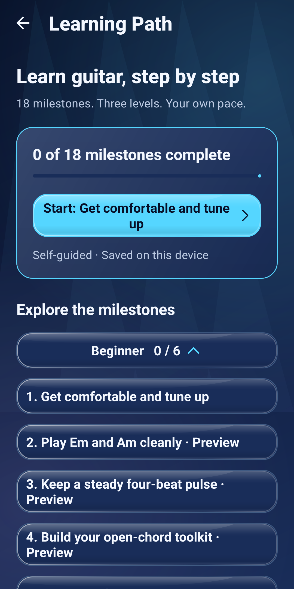
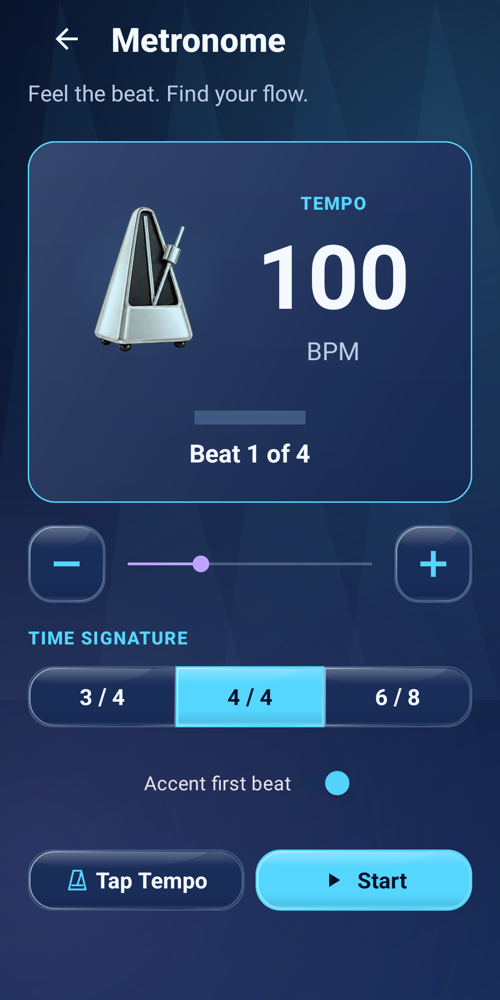
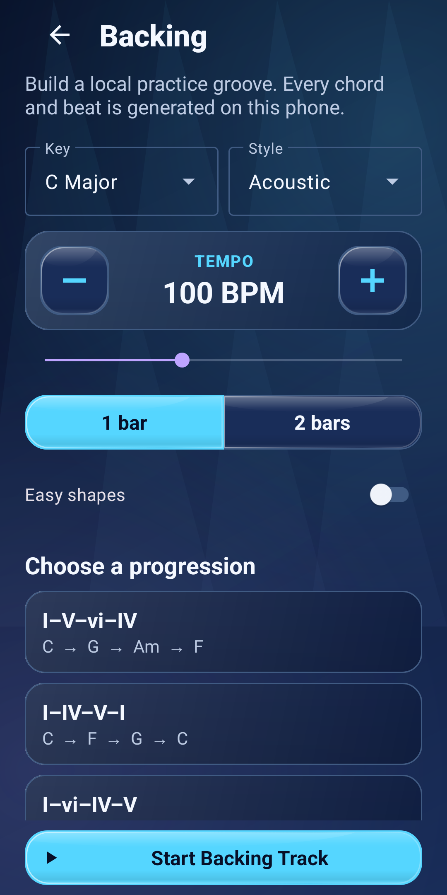

01 / CHOOSE A LESSON
Take the next small step.
Open Learning Path and start or continue your next lesson. The 18 milestones include tuning, open chords and rhythm. Mark your own progress as you practise.
A LITTLE PRACTICE. A LITTLE PROGRESS.
A guitar learning and practice app for Android. Follow guided lessons, explore chord shapes and build steady timing with a metronome and backing tracks.
Available on Google Play Android 8.0+
Full access requires a subscription or authorized evaluation access.

REAL SCREENS. A SIMPLE ROUTINE.
Start with a lesson, find a comfortable pulse, then play with a backing progression. These are unchanged captures of the Android app; tap any screen to see it at full size.
01 / CHOOSE A LESSON
Open Learning Path and start or continue your next lesson. The 18 milestones include tuning, open chords and rhythm. Mark your own progress as you practise.
02 / FIND YOUR PULSE
Open Practice → Metronome. Choose 4/4, set a comfortable tempo and tap Start. Try one downstrum per click before adding a chord change every four beats.

03 / PLAY WITH A GROOVE
Open Practice → Backing Tracks. Choose a key, style, tempo and progression, then start the backing track. Its audio is generated locally on your phone.

The screenshots show example settings, not required starting tempos. Full tool access requires a subscription. Check the subscription details below.
SOMETHING TO TRY TODAY
Clear explanations and small exercises, with or without AuraFret.
CHORD CHANGES
Build cleaner transitions with a five-minute routine and a comfortable pulse.
RHYTHM
Count the beat, stop rushing and add chord changes one step at a time.
CAPO BASICS
Place your capo, understand sounding pitch and choose the shapes you play.
01 Tune & warm up
02 Build your rhythm
03 Work through a song
LESS SETUP. MORE PLAYING.
Tune your guitar, explore chord shapes and follow a guided Learning Path. Return to your last lesson when you’re ready for another session.
Guitar tuner · Chord library · Lessons
Play with a metronome, generate a backing progression or work on your chord transitions. Start at a comfortable pace and make the changes feel familiar.
Metronome · Backing tracks · Transitions
Import audio you own or record a reference with permission. Review the estimated chord map, correct it, slow playback and loop a tricky passage.
Song maps · Speed control · A–B loops
ANALYSIS BETA · CHECK BY EAR
Live Practice listens through your phone’s microphone and estimates chords, key and tempo. Recommended Capo and Suggested Strumming Pattern can help you explore ways to play.
Musical estimates can be delayed, incomplete or wrong, especially in a busy mix. A likely next chord in Live is a prediction. File practice can look ahead because the recording is already available.
YOUR PHONE. YOUR PRACTICE.
Core audio analysis runs on your device. There’s no AuraFret account, advertising, analytics or automatic audio upload.
Live and Tuner audio is discarded. Recordings you explicitly make in Learn & Analyze Song stay privately on your phone. Optional ZIP backups go to a location you choose; that provider may sync them.
Read the full Privacy PolicyFull access requires an active Google Play subscription. Monthly and yearly plans are offered. A 15-day trial applies only when Google Play offers it to your account.
Google Play shows your local price, any eligible trial, first charge and renewal terms before purchase. Subscriptions renew automatically unless cancelled. Cancel in Google Play before the next charge; uninstalling does not cancel a subscription. Saved results and deletion remain available after access ends.
Read the Terms of UseAuraFret is published by DJ Apps Studio. For privacy questions, data requests or app support, email support.djapps@gmail.com. Please do not include payment details or recordings in your initial message.